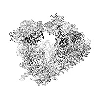

|
 |
Seeking principles
in the coordination among protein synthesis, metabolism, cell growth and differentiation
|
|
Doctoral and Post-doctoral Positions
| |
|
We are looking for PhD students and postdocs who enjoy working on fundamental and quantitative problems in biology,
surrounded by an interdisciplinary group of people including biologists, physicists, and engineers.
For description of the research focus of the lab see Research and our recent Publications.
The projects are supported by the NIH Director's Award.
Students with MS degrees can receive course credit for their graduate coursework that will count towards the PhD requirements. For more information on qualities that we value highly, see Prospective Applicants. If you are applying for a PhD position, you must apply to the graduate program of Northeastern University. |
|